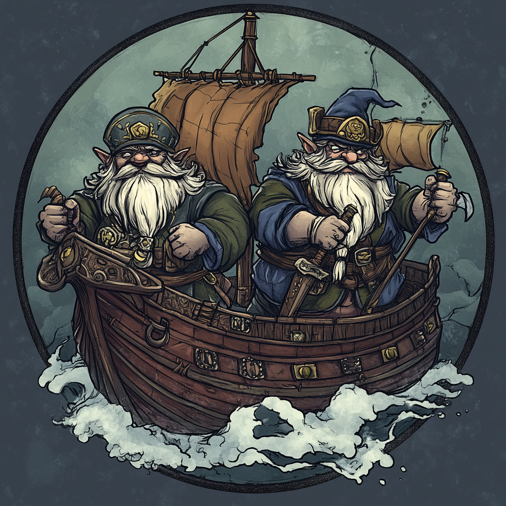
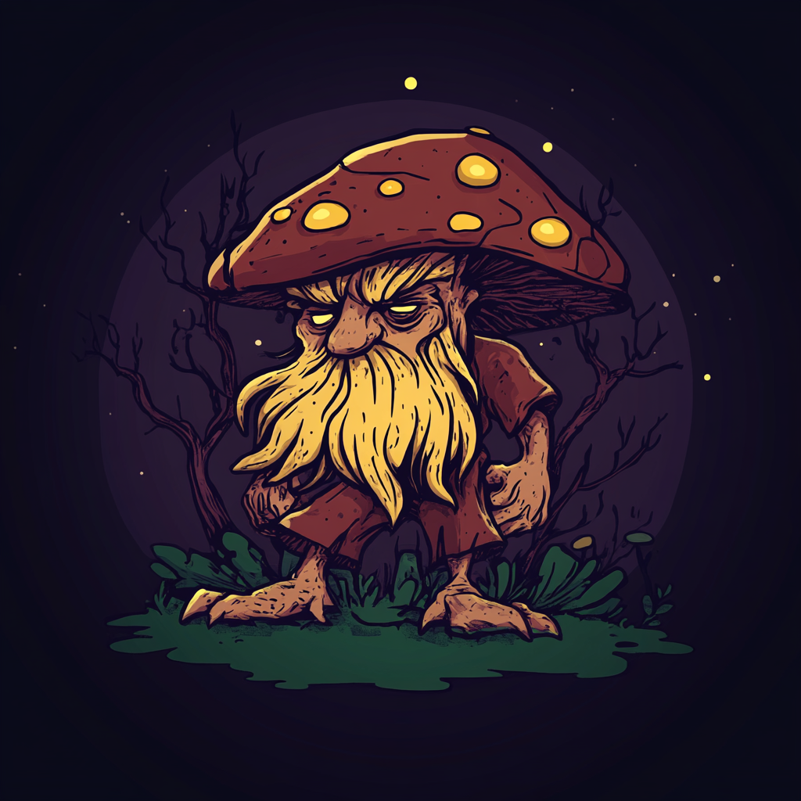
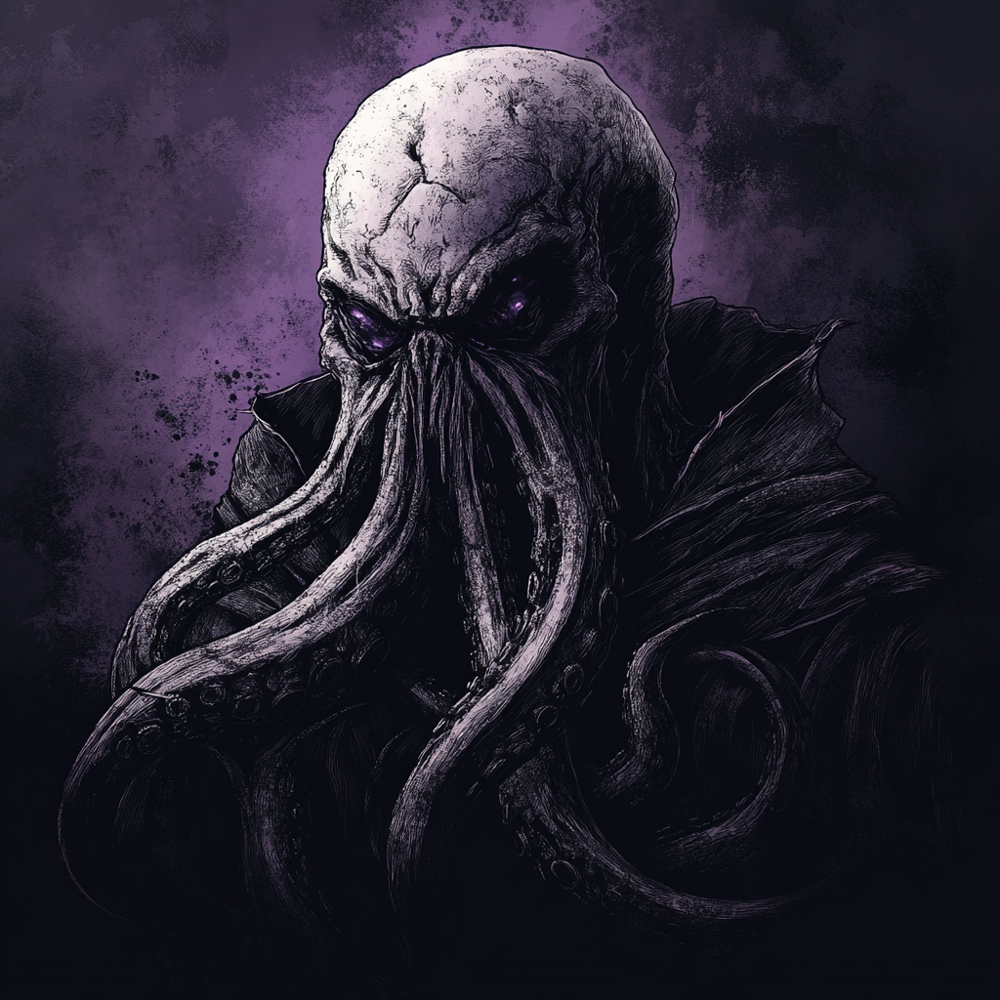

About Us

Founded by a group of intrepid adventurers, Valfar and Sons Underdark Surveyors Inc. has become the premier resource exploration and trading company in the Underdark. Based in the great city of Gracklstugh, we navigate the treacherous Darklake to bring valuable resources to our clients across the subterranean realm.
Our Services
- Underdark Resource Surveying
- Darklake Shipping and Trading
- Rare Mineral Identification
- Subterranean Route Mapping
- Drow Negotiation Assistance
Client Testimonials

"Valfar and Sons' expertise in navigating the Darklake has allowed our myconid spore farm to thrive. Their reliable shipping services have expanded our reach to markets we never thought possible!"

"Thanks to Valfar and Sons, we discovered a rich vein of mithral that had eluded us for centuries. Their surveyors are second to none in the Underdark."

"Our illithid colony has greatly benefited from the trade routes established by Valfar and Sons. Their discretion and efficiency are unmatched in the depths."
Contact Us
Ready to explore the untapped potential of the Underdark? Reach out to us via deepstone telepathy or visit our offices in Gracklstugh's Darklake District.
Send a Mind Flayer Message